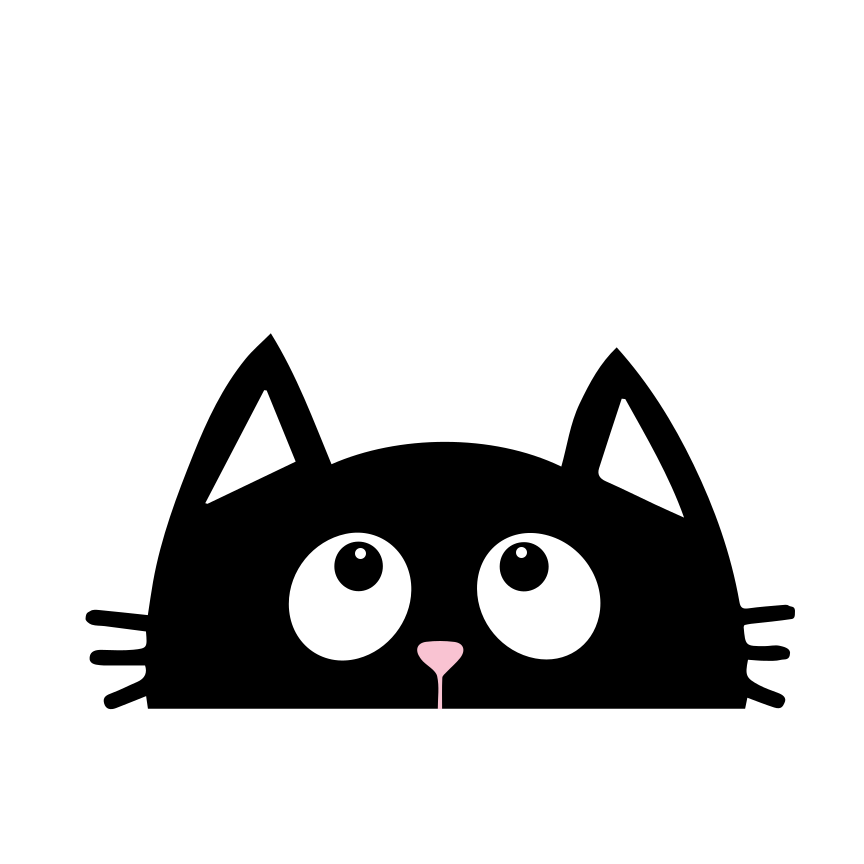
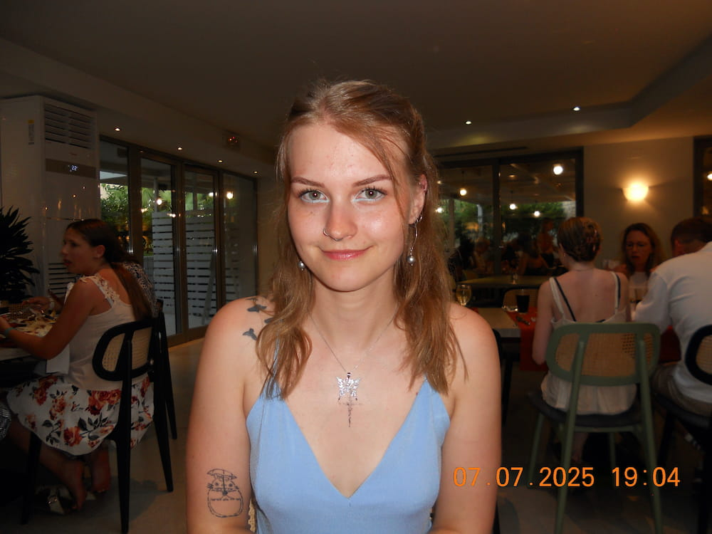

Josefin Carlsson portfolio
Jag är en ux designer som är väldigt målorienterad och beslutsam. Jag jobbar med att tillgänglighetsanpassa och UI. Jag har en bakgrund inom hantverksyrken samt ledarskap.
-
josefin.carlsson@yh.nackademin.se
-
0703438159
Titreringsprocessen av
ADHD-medicin
Mitt senaste projekt
ADHD-medicin